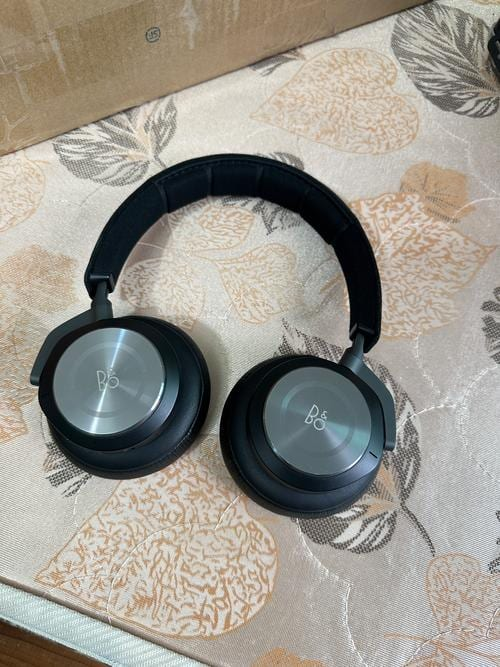

B&O Beoplay H9

北欧设计的优雅降噪头戴，质感至上
客观评测
Beoplay H9 一代采用 40mm 动圈单元，支持主动降噪与蓝牙 4.2 aptX，标称降噪开启续航约 14 小时。铝制外壳搭配真皮头梁与记忆棉羊皮耳垫，整机约 295 克。实测调音呈温暖的流行取向：低频饱满柔和，中频人声顺滑，高频克制不刺激，整体听感舒适耐听；降噪能力以低频噪音削减为主，效果温和自然，触控面板支持滑动调节音量与切歌，操作直观。
主观点评
H9 把北欧设计美学诠释到了极致：阳极氧化铝的凉意、小羊皮的温润，戴在头上更像一件时尚单品。声音同样优雅从容，听流行与爵士舒适惬意，长时间聆听毫无压力。它并非以音质或降噪称霸，而是胜在质感与格调——在咖啡馆里安静听歌的午后，H9 营造的氛围感，正是许多人愿意为这份设计与用料买单的理由。
优点与不足
- 铝材、真皮与羊皮的用料做工堪称艺术品
- 佩戴温润舒适，调音温润耐听不刺激
- 触控操作直观，有线无线双模灵活
- 降噪深度一般，主要削减低频噪音
- 续航 14 小时在同级中偏短
- 售价高昂，性价比不占优势
参数规格
| 类型 | 包耳式无线主动降噪 |
|---|---|
| 单元 | 40mm 动圈 |
| 蓝牙 | 蓝牙 4.2，支持 aptX |
| 降噪 | 主动降噪（ANC） |
| 续航 | 约 14 小时（降噪开启） |
| 重量 | 约 295g |
| 材质 | 铝制外壳、真皮头梁、羊皮耳垫 |
| 操控 | 右耳罩触控面板 |
| 接口 | 3.5mm 有线输入、micro-USB 充电 |
| 附件 | 便携收纳盒 |